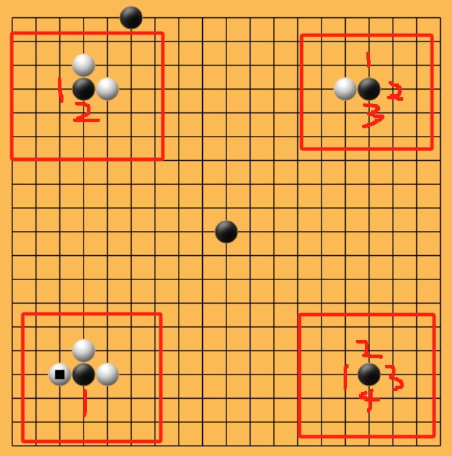
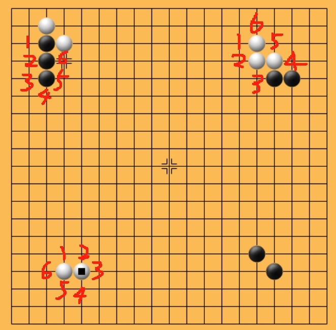
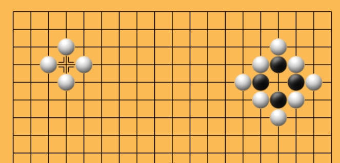
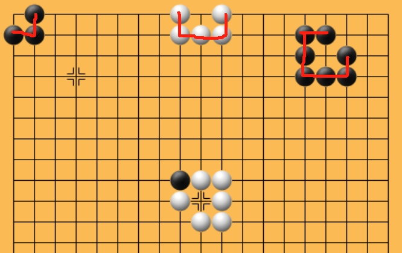
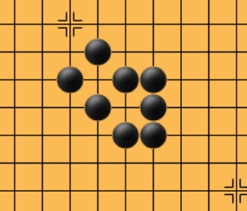
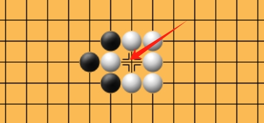
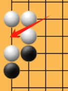
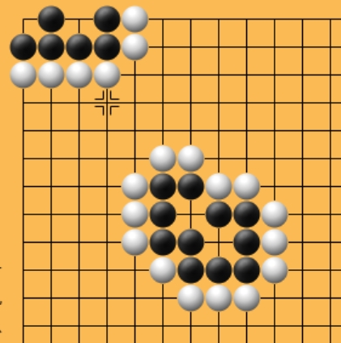
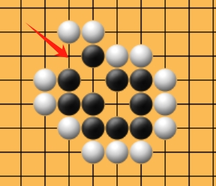

相信大家对围棋最基本的认识是吃子，让对方的棋越来越少。这其实是从结果的角度去理解围棋，但其实在下围棋的过程中才能感觉到围棋的最大乐趣！我自己学了有半年的围棋，起初我对围棋的认知仅停留在吃子的地步，但是随着我对围棋的深入，我逐渐爱上了围棋。我和别人下过几场围棋（虽然都是惨败），但是我发现：一个小小的棋盘上存在着巨多变数和无限可能！而且最让人激动的时刻莫过于你推演局势并计算出了这种局势逆转一手的时刻，给人一种"统御全局"的感觉。
我自己也在学习阶段，我开围棋这系列的博客一方面是想要和大家分享我的学习内容，另一方面是希望我能更好地理解我的学习内容。因为我知道一个知识点能不能被消化取决于你能不能讲清楚它，所以我尽可能用通俗语言给大家讲解围棋的知识点。
我今天想讲的是围棋的"真假眼"的判断。
一、先从"气"说起
在讲眼之前，需要讲什么是禁入点；为讲清楚禁入点，我还是会从大家最熟悉的"吃子"开始讲起。首先，我们围棋中有一个概念叫做"气"，一颗棋子的"气"的数量就是它左右上下相邻的空白交叉点的个数。

气的数量
通过图片我们可以看到：左上角红色框框内黑棋有左、下两口气，右上角黑棋有上、下、右三口气，右下角四周都是空白交叉点，而左下角的黑棋只有一口气——也就是说白棋往下一堵，黑子就被吃了（但实际当前轮到黑棋下，所以目前白棋方只是在"征吃"，黑棋只需要往下走一步，也就是"长"，那黑棋就活过来了）。
二、棋子的"连通"与共用气
当然实际过程中很少会让棋子孤立存在，所以如果棋子形成"连通"状，则连通棋子的气共用：

棋子连通，气共用
图片中左上角三颗黑棋共用 6 口气，右上角白棋 6 口气，左下角白棋 6 口气。值得注意的是，连通只存在于上下左右，斜对角同色不算连通，所以右下角黑棋其实是两个孤立的棋子，没有连通。（连通就是上下左右有一枚棋是同种颜色的棋，那么当前的棋子就是连通的状态。）
总而言之，只要你的气被不同颜色的棋子给占据了，那么你的棋子就被吃了。
三、什么是"禁入点"
知道了被吃的条件，我们就可以开始讲禁入点了！通俗来说，只要你下下去，如果发现你下的地方使得你这一片（或者是一个）棋子没气了，那就是禁入点。但是如果落子后能提掉对方的棋子，那这个地方就不是禁入点，下图就有现成的例子。

禁入点
实际上图中显示的两块地方都有黑棋的禁入点位。左边你往白棋中间下，你落下的黑子四周全是白棋，你就没气了（实际这地方就不让下）；右方本来有一口气，但是你往中间下导致整块棋都没气了。（如果换成白棋下这里，它可以提掉四颗黑子，之后又有四口气了，所以这地方白棋可以下——它反而是黑棋的禁入点。）
四、回到"眼"：禁入点的特殊形态
现在回到我们的"眼"的概念。你可以通俗理解为对方暂时不能下的地方，所以眼算是一个禁入点。上图中左边就是一个眼，右边不是眼，因为白棋可以下到中间——但是白棋下到中间后就做出了四个眼（不过全都是假眼）！
那么眼也分假眼和真眼。

真眼和假眼
上图中棋盘上面的三块棋围成的眼就是真眼，而棋盘中间围成的眼是假眼。其实判断很简单：所有同种颜色的棋子在眼的周围能够连通，那它就是真眼，反之是假眼！
还有一种比较抽象的情况：

特殊情况下的真眼
右下角那个禁入点它也是真眼……我好几次都在这块地方翻了车。你可以将禁入点看作是我们的棋子，这样右下角那块黑棋就连通了。这种情况在实战中非常常用，因为它极具迷惑性，否则你正常下连通棋容易被对手看穿！
五、假眼的最大特征
假眼的最大特征就是——即便当前可能是禁入点，但是眼周围至少有一个棋子能被吃掉。


假眼：周围有棋子可被吃掉
只要黑棋下到红色箭头指向的位置，就会将一颗围着的白棋给吃掉，此时白棋围成的禁入点不再成立。
六、做眼：一种防御手段
围棋虽然在一个小小的棋盘上开拓战场，但是这个战场远远比我们想象的复杂！你会有非常多的手段来赢得这场战争，其中做眼可以认为是一种防御手段（我说的是做真眼……）。你只要在对方包围圈里做出两个真眼，那么这块棋你就死不了！

两个真眼即为活棋
当然，对手也不是傻子，如果让他看到你做眼，他就会提前下你要下的地方，这样一来你就没法做活了，这就是俗话说的"走别人的路，让别人无路可走"。

堵眼，破坏对方做活
只要白棋先一步下在红色箭头处，那包围中的黑棋必定是死棋！
各位可以联想一下：白下红色箭头处，黑棋不可能堵眼，否则白棋下另外一个眼，黑棋全灭。如果黑棋下在别处，白棋下左上方的假眼提上面的黑子，黑子不能立刻再下回上方，必须要下一手其他地方再吃回来——这是规定（这处算是一个"劫材"）。那么白棋堵住右下角的眼，黑棋全灭。
真假眼的判断是围棋死活计算的基础。一旦你能在脑子里快速分辨出哪块棋是"真活"、哪块是"假活"，对局面的掌控感会上一个台阶。这也是我开这个围棋系列的初衷——把学到的东西讲清楚，自己也理解得更透。下一篇我们继续聊围棋里那些有趣的门道。